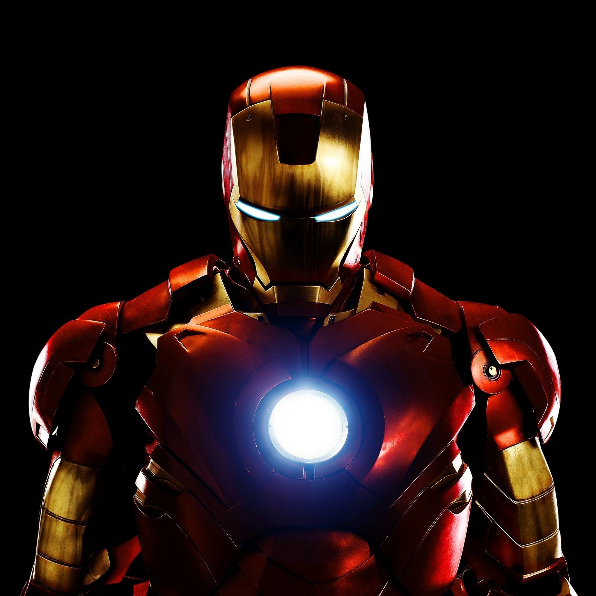

.jfif)
.jfif)
钢铁侠（美国漫威漫画公司旗下超级英雄）钢铁侠（Iron Man）是美国漫威漫画旗下的超级英雄。有多代钢铁侠，其中最为著名的是托尼·史塔克，初次登场于《悬疑故事》第39期（1963年3月），由斯坦·李、赖瑞·理柏、唐·赫克和杰克·科比联合创造。全名安东尼·爱德华·“托尼”·斯塔克（Anthony Edward 'Tony' Stark），是斯塔克工业（STARK INDUSTRIES）的CEO，因一场阴谋绑架中，胸部遭弹片穿入，生命危在旦夕，为了挽救自己的性命，在同被绑架的物理学家何·银森（Ho Yinsen）的协助下托尼制造方舟反应炉（Arc Reactor）从而逃过一劫，利用方舟反应炉作为能量运转的来源，暗中制造了一套装甲（Mark1）杀出重围后逃脱，后参与创立复仇者联盟。
|
|---|
创作背景 |
外貌特征 钢铁侠的外观与能力随着斯塔克不断的改造更新其装备而持续的变化，尤其是他的动力装甲。钢铁侠的装甲一开始是灰色的，但斯塔克发现这样的外貌会造成大众恐慌，因此他将装甲重新烤漆成金色（《悬疑故事》40期）。这副笨重的装甲在《悬疑故事》48期改良成较贴身设计的造型，颜色也换成红金相间，此一造型成为往后钢铁侠的基本样式。“白银战将”（Silver Centurion）这套装甲是一个特例，有着金色与银色的造型，这套装甲是设计用来对抗奥巴代亚·斯坦（Obadiah Stane）的铁霸王（Iron Monger）装甲，斯塔克持续使用这套装甲直到第一次装甲战争（Armor War I）结束为止。 |
|---|---|
设备设施来自于他穿着的先进动力装甲。由方舟反应炉提供能量，赋予斯塔克超人力量及飞行能力。装甲还可以吸收周遭的能源如热量与动能并转化成电力，甚至可以直接吸收电力来为电池进行充电。斯塔克还加装了喷射推进器足以让他拖着一整列火车前进。除此之外，装甲还可以完全的与外界隔离，让斯塔克可在太空或海底行动，具备内建的维生系统，并可隔绝放射线。 |
运行系统操控系统：借由头盔中神经机械学界面读取斯塔克的脑波进行运作。其自行设计的具人工智能操控系统的高科技电脑，利用内部与外部的感应器能提供战略资讯与机甲的即时状态报告。斯塔克为确保机甲不会自主暴走曾设立了防护系统，但这些系统曾一度被破坏。
武器系统：但钢铁人的制式攻击武器一直都是其经由手套掌心发射出的冲击光束（Repulsor Ray）。内建在各代装甲中的武器包括了由胸口发射的单束光炮（Uni-Beam）；随着运行吸收周围动能的脉冲光，运行距离越远就越强大；电磁冲波发射器；以及能量护盾。其他的功能包括了发射极冻光线（Ultra-Freon），制造与操控磁场和音波炮等用来诱敌的全像制造器。 |
|  | |
|
|---|
| 智力 | 3 | 力量 | 7 |
|---|---|---|---|
.png)